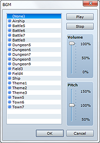
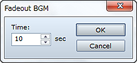
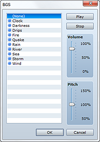
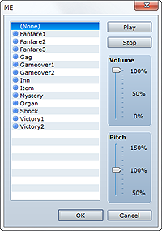
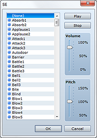

Starts playing BGM (background music).
Specify the BGM file to play. Select None to stop BGM playback.
Specify the playback volume.
Specify the playback pitch between 50 and 150%. Setting a value higher than 100% results in a playback speed faster (i.e. a higher pitch) than the original.
Clicking Play plays BGM using the current settings. To halt playback, click Stop.
• If the specified BGM is already being played, this event command will not run.

Lowers BGM volume while stopping playback.
Specify the fadeout time in seconds (1 to 60).
Saves the currently playing BGM along with its playback position. There are no settings to be made for this command.
Starts playing BGM from the state in which it was saved by Save BGM. There are no settings to be made for this command.

Starts playing BGS (background sound).
Specify the BGS file to play. Select None to stop BGS playback.
Specify the playback volume.
Specify the playback pitch between 50 and 150%. Setting a value higher than 100% results in a playback speed faster (i.e. a higher pitch) than the original.
Clicking Play plays BGS using the current settings. To halt playback, click Stop.
• If the specified BGS is already being played, this event command will not run.
Lowers BGS volume while stopping playback.
Specify the fadeout time in seconds (1 to 60).

Starts playing ME (a music effect).
Specify the ME file to play. Select None to stop ME playback.
Specify the volume.
Specify the playback pitch between 50 and 150%. The standard pitch is 100%, and the higher the value you specify, the faster the tempo and higher the pitch.
Clicking Play plays ME using the current settings. To halt playback, click Stop.
• If the specified ME is already being played, this event command will not run.

Starts playing SE (a sound effect).
Specify the SE file to play.
Specify the volume.
Specify the playback pitch between 50 and 150%. The standard pitch is 100%, and the higher the value you specify, the faster the tempo and higher the pitch.
Clicking Play plays SE using the current settings. To halt playback, click Stop.
• If this event command is run before SE playback completes, sound effect playback will overlap.
• SE playback will not stop even if you set None. To stop an SE, use the Stop SE event command.
Stops all SE (sound effect) playback. There are no settings to be made for this command.